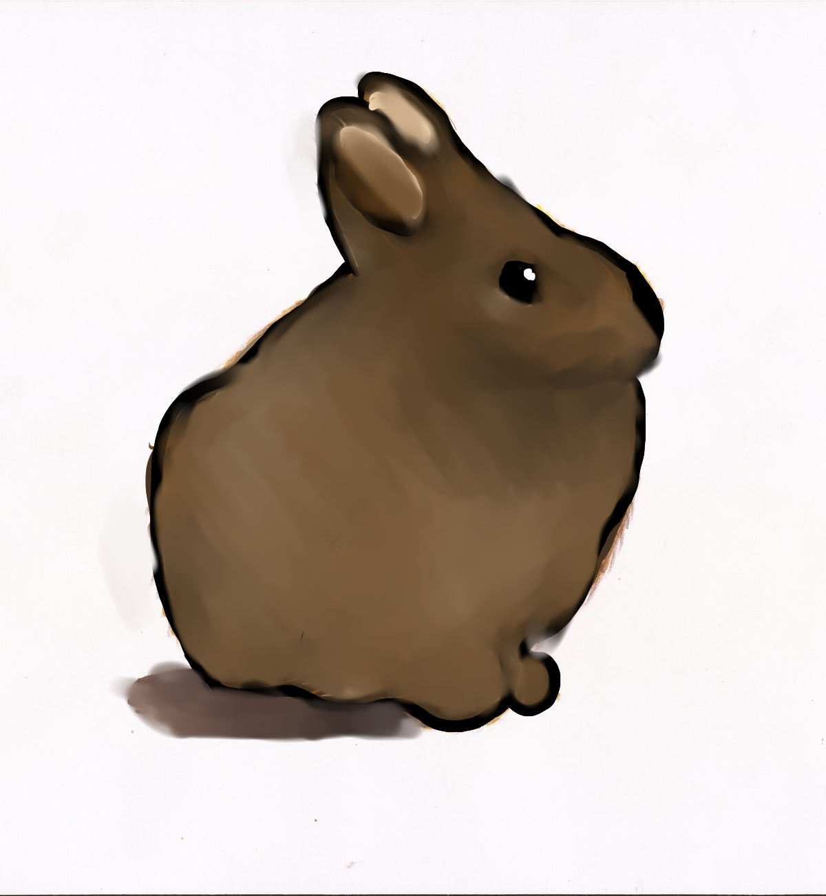

El teporingo es un pequeño conejo endémico de México. Vive en zonas montañosas y bosques cercanos a los volcanes, también es conocido como conejo de los volcanes. Es una de las especies más representativas de México.
El teporingo enfrenta problemas como: contaminación, incendios forestales, tala ilegal, pérdida de hábitat y calentamiento global.
Podemos ayudar cuidando los bosques, reciclando, evitando incendios y protegiendo los ecosistemas mexicanos.
